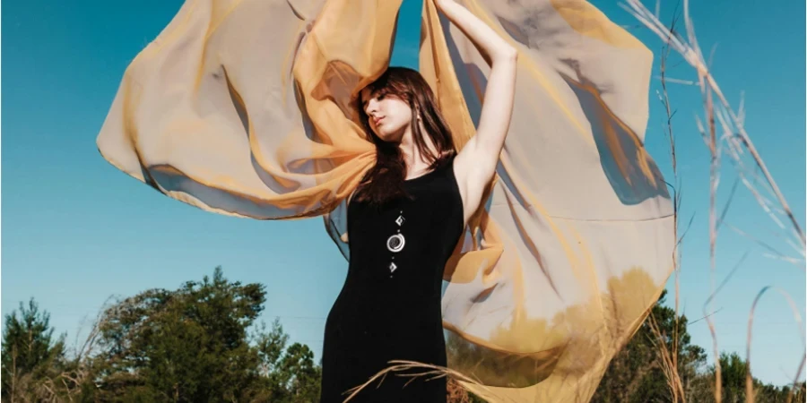
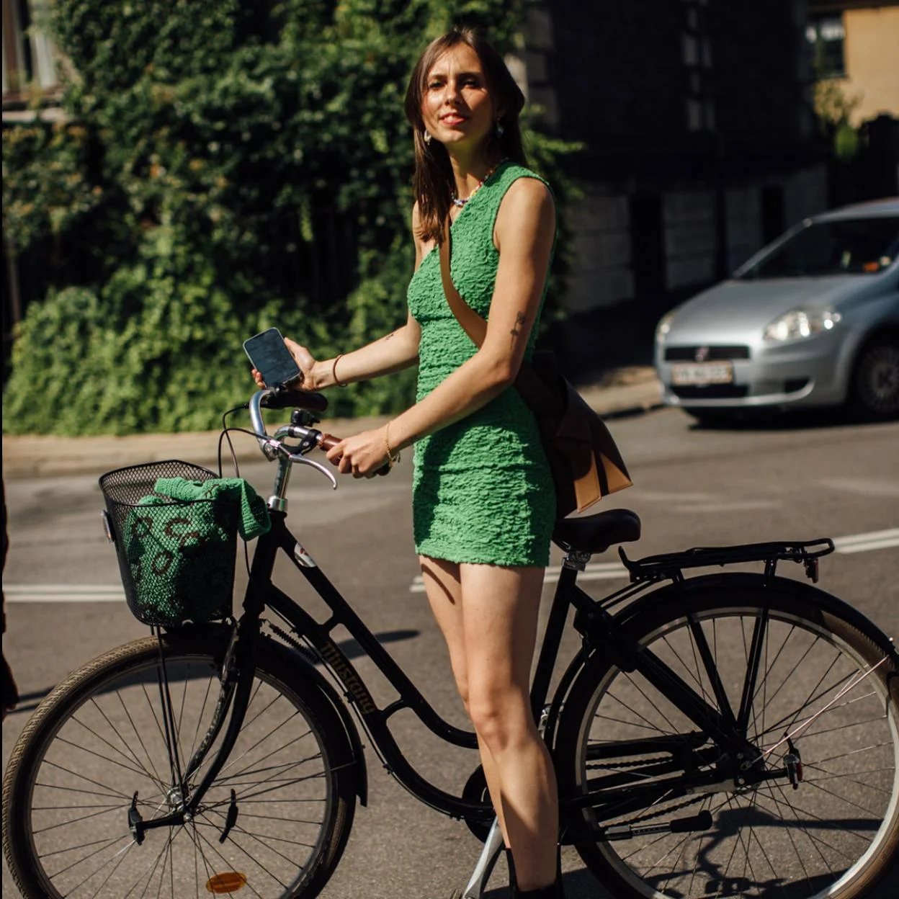
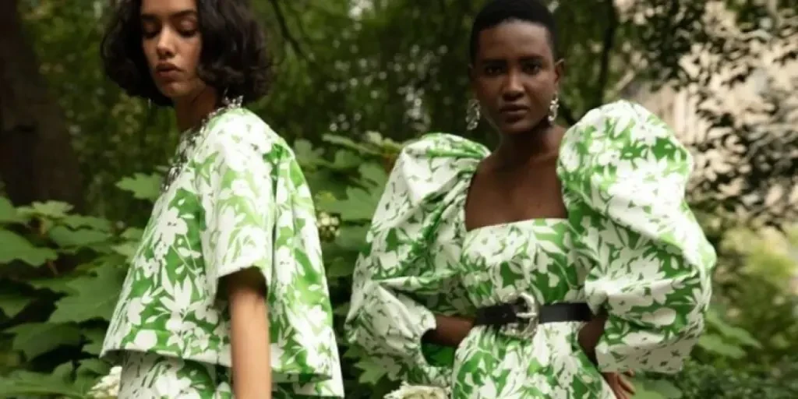
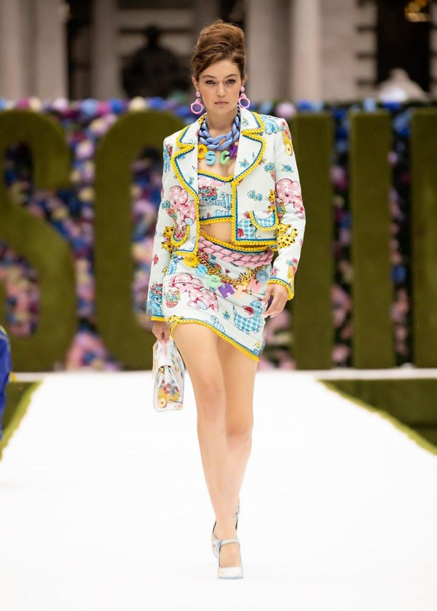
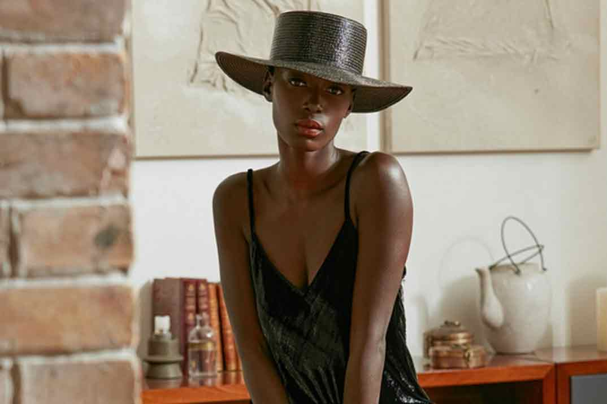
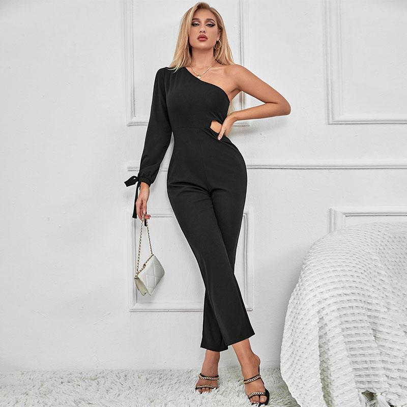
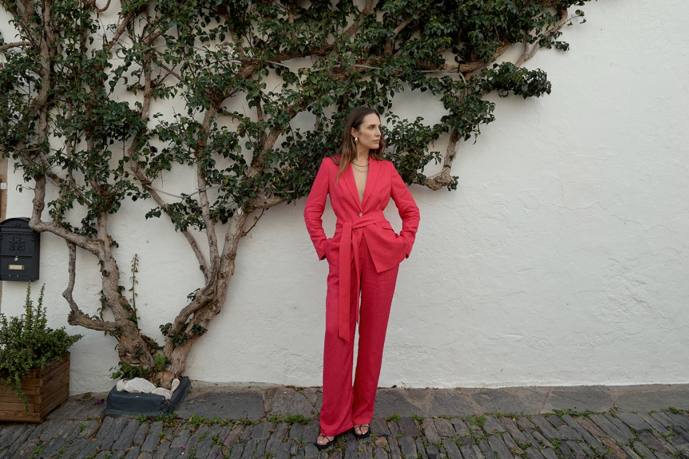

MODA FEMENINA



La temporada de primavera-verano 2025 está llena de frescura, color y elegancia. Con la llegada del buen tiempo, es hora de actualizar tu armario y añadir algunas piezas clave que marcarán tendencia. En nuestra nueva colección, encontrarás lo último en moda femenina, diseñada para que te sientas cómoda, moderna y, sobre todo, ¡a la moda!
Las prendas esenciales para esta temporada son aquellas que te ofrecen versatilidad y confort sin sacrificar estilo. Desde vestidos fluidos y maxifaldas hasta blusas de manga corta con detalles delicados, todo está pensado para que disfrutes de la temporada con total libertad de movimiento. Los pantalones palazzo y los short de talle alto también son opciones clave, ideales para el clima cálido, mientras que los blazers ligeros y las chaquetas de lino ofrecen una capa extra de sofisticación sin perder la frescura.




